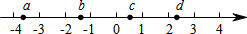
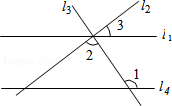

2015年北京市中考数学试题 · 选择题 第1、2、3、4、5题
1．（3分）（2015•北京）截止到2015年6月1日，北京市已建成34个地下调蓄设施，蓄水能力达到140000立方米，将140000用科学记数法表示应为（ ）
A．14×104B．1.4×105C．1.4×106D．14×106
2．（3分）（2015•北京）实数a，b，c，d在数轴上的对应点的位置如图所示，这四个数中，绝对值最大的是（ ）

A．aB．bC．cD．d
3．（3分）（2015•北京）一个不透明的盒子中装有3个红球，2个黄球和1个绿球，这些球除了颜色外无其他差别，从中随机摸出一个小球，恰好是黄球的概率为（ ）
A．B．C．D．
4．（3分）（2015•北京）剪纸是我国传统的民间艺术，下列剪纸作品中，是轴对称图形的为（ ）
A．B．C．D．
5．（3分）（2015•北京）如图，直线l1，l2，l3交于一点，直线l4∥l1，若∠1=124°，∠2=88°，则∠3的度数为（ ）

A．26°B．36°C．46°D．56°